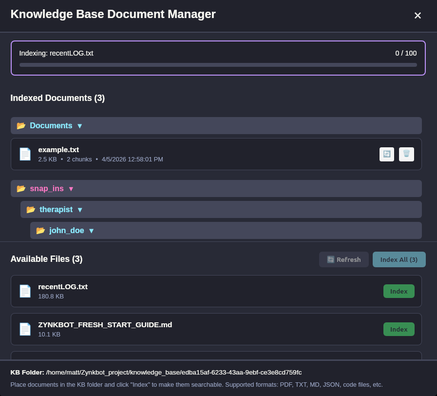
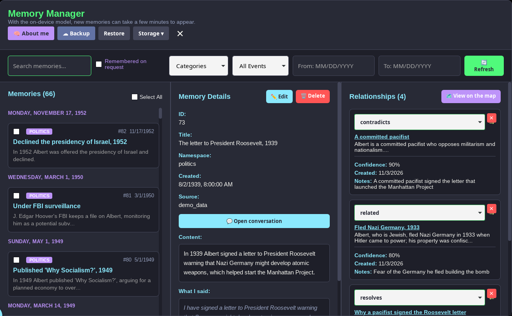

🧠 How Memory Works
Every time you send a message, Zynkbot assembles a context window from three sources before anything reaches a model. Understanding what goes into that prompt explains why conversations feel continuous and personal.
Your Accumulated Personal Memories
Facts and context built from your conversations over time — your preferences, your history, the things you've mentioned in passing. Zynkbot retrieves the most relevant ones for each query and includes them in the prompt automatically. You can edit, delete, or add memories at any time.
Your Current Conversation
The conversation you're having right now. Zynkbot maintains full context within a session so responses stay coherent as the discussion develops.
Your Knowledge Base (optional)
Documents you've uploaded (PDFs, text files, code, notes) that Zynkbot can query with retrieval-augmented generation. When relevant content is found, it's included in the prompt alongside your memories. Your files are processed locally and never leave your device unless you choose.

Hybrid Search: Entity + Semantic
When you ask a question, Zynkbot doesn't just do a keyword search or a vector similarity search. It uses a two-stage hybrid approach: first, it extracts named entities from your query (people, places, dates, concepts) using a local BERT AI model; then it combines those entity matches with semantic similarity search across all three memory layers. The result is retrieval that understands both what you're talking about and what you mean.
Transparent Recall
After every response, Zynkbot shows you exactly which memories it drew on to answer your question. You can open the Memory Manager, see the full list, and decide whether those memories are accurate, outdated, or should be removed. If two memories contradict each other, Zynkbot surfaces the conflict and asks you to resolve it rather than silently picking one.

When you tell Zynkbot something that contradicts what it already knows, it doesn't silently pick one version or quietly update the record. It surfaces the conflict directly and lets you decide how to resolve it — keep the old memory, keep the new one, store both with an explanation, or mark them as an unresolved contradiction.


Full Control
Every memory is editable. Every memory is deletable. You can tag memories with namespace labels to organize and filter them — for example, separating work context from personal context. The entire memory database is a local SQLite file stored on your machine. You can back it up, export it, or wipe it entirely at any time.

Memories aren't a flat list. Each one can update, contradict or relate to others, and every memory names the people, places and things in it. The Memory Map draws all of that: a ring for each person or place, the memories that mention it gathered around it, and the relationships between memories as coloured lines. Tap any ring or dot to read it.


Try it immediately after install: load the built-in Einstein demo set (67 memories, written the way Zynkbot writes them) and ask questions from his perspective. Watch Zynkbot surface exactly which memories shaped each answer — then edit one and ask the same question again. The answer changes.
🧪 Einstein Demo
Included with every installation. Load Einstein's life as 67 memories with their links, and explore how the memory system shapes responses in real time.
- "What is my theory about the photoelectric effect?"
- "Tell me about my relationship with Mileva"
- "What did I think about quantum mechanics?"
- Open Memory Manager and edit a memory
- Ask the same question — the answer changes
- Open the Memory Map to see what the memories share